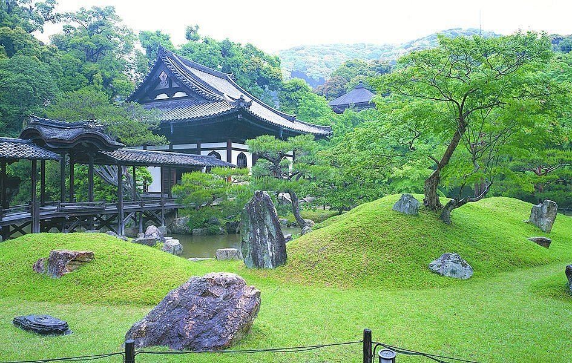

Temples in Kyoto
I like to think of the temples of Kyoto as the influencers of their time. Back when they were built hundreds, even thousands of years ago, they led the way in the arts, architecture, landscape gardening, and even food.
But here's the thing—there are temples everywhere you turn in Kyoto. In fact, this ancient city has nearly 1,600 temples, so it can feel a little daunting to decide which ones to visit. Here are my favorites—some are well-known, some are off the beaten track, but all are truly amazing and worth the time.
9 of the City's Grandest, Most Art-filled, and Serene Temples
Kiyomizu-dera
Thrillingly built over a cliff without the use of nails, Kiyomizu-dera is the grand-daddy of temples in Kyoto. Founded in 778 and rebuilt in 1633 by the third Tokugawa shogun, it's easily one of the most popular temples in Japan.
Head downhill to see the 18 massive, 400-year-old pillars that support the temple and verandah; some are the equivalent of a four-story building (don't worry, they're all earthquake-resistant).
Get in line to drink a ladle full of spring water from Otowa Falls, thought to bring good luck. Then head to the three-story pagoda for the best views of the temple. Kiyomizu-dera is especially glorious during cherry-blossom and autumn-foliage seasons.
The slope leading uphill to Kiyomizu-dera, called Kiyomizu-zaka, is lined with shops selling sweets, pottery, fans, hats, wind chimes, keychains, and other souvenirs.
Click on the map or here to get more info on the official website.
Kinkaku-ji
Often called the Golden Pavilion, Kinkaku-ji may just be the most photo-worthy temple in Kyoto. Covered in gold leaf (the source of its nickname), the three-story pavilion literally glows, its reflection shimmering on the pond below.
Designed in 1397 as a holiday villa for shogun Ashikaga Yoshimitsu, it was converted into a Zen temple after his death. In 1950, a 21-year-old disturbed monk burned Kinkaku-ji to the ground, but it was faithfully rebuilt in 1955. Today’s pavilion is covered in gold leaf five times thicker than the original.
Each story of the temple differs: the top tier reflects traditional Chinese zen architecture, the middle tier is a style common to homes of high-ranking samurai warriors, and the bottom floor resembles ancient aristocratic homes.
Get more info on the official website: Kinkaku-ji Temple

Nanzen-ji
The entrance to Nanzen-ji, a Zen Buddhist temple, is through San-mon Gate, among the most massive and stupendous gates I’ve seen in Japan. Beyond is the impressive art-filled main hall, originally a 13th-century imperial villa and now the head temple of Zen Buddhism’s Rinzai sect.
Spread throughout the grounds are 12 smaller temples. Nanzen-in served as the detached palace of Emperor Kameyama whenever he visited and contains his mausoleum, a wooden statue of his likeness, painted sliding doors, and a garden said to be the work of the emperor himself. And that interesting brick aqueduct? It was built in 1890 to transport water from Lake Biwa to Kyoto.
Nanzen-ji is famous for its colorful autumn maple leaves. Vivid Buddhist paintings fill the rooms, but my favorite is the sliding door with a painting by Kano Tanyu of a tiger drinking water in a bamboo grove. I’m also a fan of the temple’s Zen rock garden, attributed to famed landscape designer Kobori Enshu. One of the rocks is said to look like a leaping tiger.
Click on the map or here to get more info on the official website.
Sanjusangendo
Quite simply, Sanjusangendo Temple blows me away. More than 1,000 life-size wooden statues of Kannon, the goddess of mercy, are lined up in 50 rows, 10 statues deep, all carved from Japanese cypress in the 12th and 13th centuries and covered in gold leaf. A huge statue of Kannon sits in the middle, carved in 1254 by Tankei, one of Japan’s most famous sculptors. The entire assemblage is guarded by 28 statue deities, an intact surviving set so rare they’ve been designated National Treasures.
Sanjusangedo stretches almost 400 feet wide, making it the world’s longest wooden building. Be sure to wander behind the statues to the back corridor, whose length proved so irresistible to samurai that archery competitions have been held here for centuries.
Click on the map or here to get more info on the official website.
Ginkaku-ji
Officially called Jisho-ji, Ginkaku-ji Temple (Silver Pavilion) is its popular name, even though there isn’t an ounce of silver on the bare-wood, two-story structure. That’s because when shogun Ashikaga Yoshimasa built it as his retirement villa in 1482, he planned to coat it in silver in homage to his grandfather’s Golden Pavilion. I’m glad he never did, because it’s beautiful just as it is.
The complex reflects Yoshimasa’s aesthetic pursuits, from the tea ceremony to viewings of a full moon. The gardens, which contain rippled sand, a conical sand mound shaped like Mt. Fuji, and hillside pathway leading past moss and streams, are a highlight of a visit.
Philosopher’s Walk, which passes Ginkakuji Temple’s front gate, stretches about a mile along a canal. Lined with cherry trees, it’s spectacular in spring.
Click on the map or here to get more info on the official website.
Kodai-ji
In contrast to the other temples on my list, Kodai-ji Temple carries the distinct hand of a woman. It was founded in 1606 by widow Nene as a tribute to her husband Toyotomi Hideyoshi, a great warrior credited with unifying Japan.
A memorial hall enshrines wooden images of the couple (Nene is on the right), along with a staircase that utilizes a technique called “makie,” in which gold or silver powder is sprinkled on lacquer while it’s still wet. What I truly love here is the rock-studded garden, laid out by 16th century tea master and artist, Kobori Enshu. Nene, by the way, became a Buddhist monk after her husband’s death.
Get more info on the official website: Kodai-ji Temple

Ryoan-ji
Ryoanji Temple has the most famous rock garden in Japan. Only 30 feet wide and 80 feet long, it’s the epitome of Zen simplicity, just 15 rocks of various sizes arranged on a bed of raked white pebbles.
The temple dates from 1450, but no one knows who designed the garden, or when, or what it represents. Islands in an ocean? Mountains rising above clouds?
Ancient earthen walls enclose the garden on three sides, with the fourth side given over to a verandah where you can sit, contemplate, and come up with your own interpretation. Afterwards, stroll around the temple’s grounds with its 1,000-year-old pond and landscape garden.
Get more info on the official website: Ryoan-ji Temple
Saiho-ji
Saihoji is famous for its moss garden, earning it the nickname Kokedera (Moss Temple). More than 120 moss varieties form a velvety cushion under groves and around a pond shaped in the Japanese character for “heart.” It’s so inviting, you’ll wish you could lie down and take a nap.
Founded almost 1,300 years ago, Saihoji originally gained fame as a dry landscape garden, with both Yoshimitsu Ashikaga and his grandson Yoshimasa modeling their gardens at the Golden and Silver Pavilions after it. But years of natural flooding brought fertile soil, so that by the end of the 19th century, moss flourished. Today it looks like it belongs in a fairytale.
Click on the map or here to get more info on the official website.
To-ji
Founded in 794 as a guardian temple to the newly founded imperial city, To-ji Temple is famous for its towering five-story pagoda, the tallest in Japan and built to withstand earthquakes.
Held on the 21st of every month, it’s a must visit for shopping enthusiasts, with more than 1,000 vendors. It’s the largest flea market in Japan, a festive hunting ground for antiques, crafts, vintage kimono, food, plants, and more.
Click on the map or here to get more info on the official website.